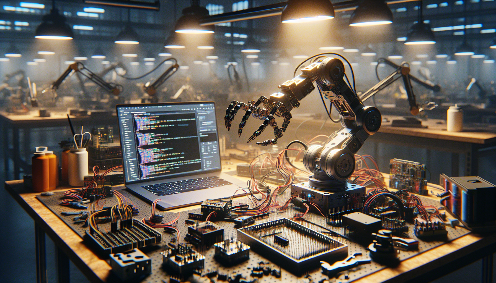

OpenClaw started as the kind of idea many builder projects start with: a simple question that refused to go away. What would it look like to create a robotic claw platform that was open, hackable, useful, and documented in public from day one? Not just another demo. Not just a one-off prototype. Something that developers, makers, and AI enthusiasts could actually study, fork, remix, and improve.
This post is the story behind OpenClaw: what it is, what problem it tries to solve, and why I decided to build it in the open on GitHub. If you are interested in open source hardware, robotics, AI interfaces, rapid prototyping, or the messy reality of turning an idea into a working system, this is the behind-the-scenes version.
I am writing this builder-to-builder, because that is really the spirit of the project. OpenClaw is not about pretending the process is polished. It is about showing the real work: the design decisions, the tradeoffs, the failed iterations, the small wins, and the belief that sharing source code and build files can accelerate better projects for everyone.
At its core, OpenClaw is an open source robotic claw build designed to be understandable, reproducible, and extensible. The idea is to combine mechanical design, electronics, software, and AI-friendly interfaces into a single platform that people can actually build on.
The name is intentional. It is open in both senses: open source in terms of code, hardware files, and documentation, and open-ended in terms of use cases. Depending on how you approach it, OpenClaw can be a robotics learning platform, a maker project, a computer vision experiment, a remote manipulation tool, or a testbed for AI agents interacting with the physical world.
Instead of locking the project behind proprietary decisions, OpenClaw is built around transparency. That means publishing the source code on GitHub, documenting the hardware stack, sharing design files, and exposing the architecture clearly enough that someone else can understand not only how it works, but why it was built that way.
For developers, that means cleaner interfaces and code that is easier to inspect. For makers, it means parts and assemblies that can be modified without guessing. For AI enthusiasts, it means a physical system that can connect to software workflows and experimentation.
I built OpenClaw because I kept running into the same gap. There are plenty of robotics demos online, and there are plenty of software repositories that claim to be open. But very often, the real project is not actually reproducible. The code is incomplete. The hardware is undocumented. The CAD files are missing. The wiring is unclear. The setup only works on the original builder's machine. Or the project is so optimized for presentation that it is not useful as a learning resource.
I wanted to build something different.
I wanted a project that embraced the full stack of building: mechanics, firmware, control logic, integration, and documentation. I also wanted to create something that did not require enterprise-level resources to understand. A motivated developer or maker should be able to clone the repo, inspect the structure, and start learning from the build immediately.
There was also a deeper motivation. AI is getting very good at text, images, and software tasks, but the bridge between AI systems and real-world physical interaction is still one of the most interesting frontiers. A robotic claw is not the entire answer, obviously, but it is a practical interface for exploring how software, sensors, control systems, and higher-level intelligence can work together.
So OpenClaw became my way of exploring that space in public. It is part robotics project, part open source experiment, and part invitation for other builders to join in.
From the beginning, I tried to keep OpenClaw grounded in a few principles.
That philosophy changes how you build. It means you do not only ask, “Can I make this work?” You also ask, “Can someone else understand this six months from now?” and “Can another builder adapt this without starting from zero?”
In practice, that leads to choices that are sometimes less flashy but more valuable. Clean repository structure matters. Build notes matter. Versioned files matter. Naming conventions matter. Repeatable setup matters. If you have ever tried to resurrect your own prototype after a few months, you already know why.
OpenClaw is shaped by that reality. It is not just a robotic claw. It is a documented build system for a robotic claw.
GitHub is not just where the code lives. It is part of the product. That may sound strange for a hardware-heavy project, but for open builds, the repository is the workshop table that everyone can see.
By building OpenClaw on GitHub, I can keep the development process visible. Issues can capture ideas, bugs, and next steps. Commits tell the story of how the project evolves. Source files, firmware, CAD references, documentation, and experiments can all live in one place. That creates a better feedback loop, not only for contributors, but for me as the builder.
It also forces discipline. When you know other people may inspect your choices, you naturally start organizing things better. You leave better notes. You clarify assumptions. You think more carefully about setup. That pressure is useful.
For developers, GitHub makes OpenClaw easier to explore and fork. For makers, it creates a public trail of the build process. For AI enthusiasts, it provides a real example of how software repositories can support physical computing and robotics projects in a transparent way.
One of the biggest lessons from OpenClaw is that the hard part is rarely one isolated technical problem. The hard part is integration. Almost every interesting build eventually becomes a systems problem.
The mechanical design affects the control behavior. The electronics affect reliability. The software architecture affects debugging. The documentation affects whether future progress is smooth or painful. Small shortcuts in one area become bigger problems somewhere else.
I also learned that open source hardware projects benefit enormously from honest scope management. It is tempting to keep adding features: more sensors, smarter control, better vision, cleaner packaging, more automation. But if you add everything at once, you end up with a project that is exciting in theory and stalled in practice.
So a lot of OpenClaw has been about sequencing. First make it move reliably. Then make it easier to control. Then improve the build structure. Then add smarter interfaces. Then document what changed. That rhythm matters more than chasing a perfect first version.
Another lesson is that people connect with authentic process more than polished claims. Sharing what did not work, what changed, and what still needs improvement makes the project more useful. Builders do not need marketing language. They need signal.
OpenClaw is for a specific kind of person: someone who likes understanding how things work and is willing to get their hands a little dirty.
If you are a developer, OpenClaw offers a practical project where software meets hardware. You can explore control logic, interfaces, automation, and integration patterns beyond pure screen-based applications.
If you are a maker, it gives you a platform to modify, fabricate, test, and iterate. The open nature of the build is the point. You are supposed to adapt it.
If you are interested in AI, OpenClaw is a compelling sandbox because it lives at the boundary between digital intelligence and physical action. That boundary is where many future tools, agents, and robotics workflows will become truly interesting.
And if you simply enjoy following real builds on GitHub, OpenClaw is meant to be transparent enough that the journey itself is worth watching.
There is a personal reason I care about OpenClaw. I believe some of the most valuable work happening right now is not only in giant labs or closed products. It is also happening in public repositories, workshops, garages, and small teams building weird, useful things in the open.
OpenClaw is my contribution to that culture.
I wanted to make something that reflects how modern building actually works: mechanical design mixed with software, rapid prototyping mixed with source control, AI curiosity mixed with practical engineering. It is easy to talk about the future of robotics and AI in abstract terms. It is harder, and more meaningful, to publish the files, document the process, and invite others into the work.
That is really why I built OpenClaw. Not because I thought the world needed one more robotic claw, but because I think we need more honest, open, reproducible projects that show how ideas become systems.
OpenClaw is still a build in progress, and that is part of the point. It is an open source robotics and AI hardware project designed to evolve in public. It exists as a practical tool, a learning platform, and a transparent record of the building process.
If you have ever wanted to see how an open hardware project comes together across code, mechanics, and iteration, OpenClaw is exactly that kind of build. And if you are the kind of person who likes improving systems, questioning assumptions, and turning rough prototypes into usable tools, then you will probably recognize a lot of yourself in this project.
The best part of building in the open is that a project stops being only yours. It becomes a shared reference point. Someone forks it. Someone improves a subsystem. Someone learns from a design mistake. Someone turns it into something you never expected.
That is the outcome I am aiming for.
CTA: Follow the OpenClaw build on GitHub and see the full source code.